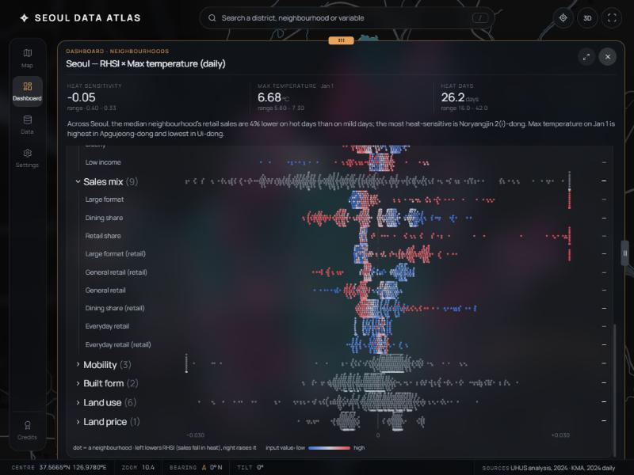

대시보드 그래프 개선안
코드는 그대로 두고, 패널마다 바꿀 수 있는 방법을 A/B/C로 그려 봤어요. 예시는 성수1가1동이고 연결 변수는 녹지 비율이에요. 모든 그래프는 실제 데이터로 그렸어요. 마우스를 올리면 값이 보여요. 테두리가 노란 카드가 제가 추천하는 안이에요. 줄마다 맨 왼쪽의 점선 카드(지금)가 현재 대시보드의 같은 패널이에요.
지금 대시보드

리서치에서 가져온 원칙 5가지
- 로그 숫자 대신 %로 써요. RHSI −0.29 대신 "폭염일 매출 −25%"처럼요. 숫자 하나에는 항상 비교 기준(서울의 보통 동네)을 붙여요.
- "하나 강조, 나머지는 회색". 422개 동네 중 내 동네 하나만 색을 쓰고 나머지는 회색 배경으로 둬요. 영국 통계청(ONS) 지역 통계 서비스가 "선택한 지역을 다른 모든 지역 사이에" 보여주는 방식이에요.
- 축에 숫자와 단위를 꼭 넣어요. 지금 그래프 대부분은 y축에 숫자가 없어요.
- 제목을 결론 문장으로 써요. "Relationship" 대신 "녹지가 많은 동네일수록 폭염 피해가 작다"처럼요.
- SHAP 비스웜은 전문가용이에요. 일반 독자에게는 "무엇이 가장 중요한가"(막대)와 "이 동네는 왜 이런가"(워터폴)로 나눠서 보여주는 게 SHAP 문서와 해설 자료들의 공통 권장이에요.
① 요약 숫자
지금: Heat sensitivity −0.29 · ▼25% …지금 문제
- 가장 큰 숫자가 로그 값(−0.29)이라 몇 %인지 감이 안 와요. −25%는 작은 글씨로만 있어요.
- ▼25%, ▼20%, ▼12%가 각각 다른 기준(폭염일 대비, 평균 대비)이라 헷갈려요. 서울 전체를 보면 "range 5.80 – 7.30"만 나와서 높은 편인지 낮은 편인지 안 보여요.
- 내가 고르지 않은 RHSI와 폭염일 타일이 항상 끼어 있어요.
A쉬운 말 타일
장점 숫자 하나만 읽으면 돼요. 단점 422곳 중 어디쯤인지는 글로만 알 수 있어요.
B타일 + 위치 띠★ 추천
읽는 법 회색 눈금이 422개 동네, 흰 눈금이 보통 동네, 노란 눈금이 내 동네예요. 장점 높은 편인지 낮은 편인지 한눈에 보여요.
C순위 게이지
장점 "상위 몇 %"만 보여줘서 가장 단순해요. 단점 실제 값의 차이가 얼마나 큰지는 안 보여요.
② 분포 / 관계
지금: Spread · Relationship 산점도지금 문제
- 축에 숫자가 없고 "ρ = 0.00" 같은 통계 기호만 있어요.
- 422개 점이 모두 색이 달라서 어디를 봐야 할지 모르겠어요.
- 일별 기온처럼 값이 몇 개로 뭉치는 변수는 세로 줄무늬처럼 보여요.
A강조 산점도 (변수 2개)
읽는 법 점 하나가 동네 하나고, 점선은 전체 경향이에요. 장점 동네 하나하나가 다 보여요. 단점 점이 많아서 여전히 바빠 보여요.
B5묶음 막대 (변수 2개)★ 추천
읽는 법 동네를 녹지 비율 순으로 5묶음(각 84곳 정도)으로 나누고, 묶음마다 폭염일 매출 변화의 평균을 막대로 그렸어요. 장점 "녹지가 많을수록 어떻다"가 바로 읽혀요.
C분포 막대 (변수 1개)
읽는 법 녹지 비율이 비슷한 동네가 몇 곳인지 세서 막대로 그렸어요. 언제 변수를 1개만 연결했을 때 산점도 대신 써요.
③ 폭염 반응
지금: Heat response (366일 점)지금 문제
- 366개 점이 회색·파랑·빨강으로 섞여서 결론(폭염일에 매출이 줄었다)이 잘 안 보여요.
- y축에 금액이 없어요.
- "RHSI ≈ −0.29 · study −0.29"를 다시 해석해야 해요.
A평소 vs 폭염일 두 막대★ 추천
장점 RHSI의 정의(폭염일 평균 ÷ 평소 평균)를 그대로 그림으로 옮겨요. 설명이 필요 없어요.
B기온 구간별 평균 매출
장점 더워질수록 매출이 어떻게 바뀌는지 흐름이 보여요. 단점 추운 날 효과까지 같이 보여서 주제가 흐려질 수 있어요.
C1년 흐름 + 폭염일 표시
장점 언제 폭염이 있었고 그때 매출이 어땠는지 시간 순서로 보여요. A 아래에 보조로 붙이기 좋아요.
④ 순위
지금: Ranking 상위·하위 10지금 문제
- 동네 이름이 잘려요(Myeonmok 5(o…).
- 음수 값도 막대가 오른쪽으로 길어져서 방향이 헷갈려요.
- 단위가 "log-ratio"예요.
A0 기준 양방향 막대★ 추천
장점 감소는 왼쪽(빨강), 증가는 오른쪽(파랑)이라 방향이 바로 보여요. 이름은 줄여서 두 줄로 써요. 내 동네는 항상 아래에 고정돼요.
B422곳 전체 줄 세우기
장점 내 동네가 전체에서 어디쯤인지 보여요. 단점 개별 동네 이름은 마우스를 올려야 보여요.
C구 25개 평균
장점 동이 422개라 많으니 구 단위로 먼저 보여줘요. 구를 누르면 그 안의 동을 보여주는 식으로 쓸 수 있어요.
⑤ 같은 주제 한눈에
지금: Theme at a glance 미니맵지금 문제
- 지도가 전부 주황·빨강 계열이라 서로 구분이 안 돼요.
- 범례가 없어서 진한 색이 높은 건지 낮은 건지 몰라요.
- 내 동네가 지도 어디에 있는지 표시가 없어요.
A동네 프로필 (백분위 띠)★ 추천
읽는 법 가운데 흰 선이 서울의 보통 동네예요. 노란 점이 오른쪽일수록 그 항목이 높은 동네예요. 장점 "이 동네는 어떤 동네인가"가 한 번에 읽혀요.
B한 가지 색 미니맵 + 범례
장점 지도 느낌은 그대로 두고, 한 가지 색의 진하기와 범례로 높고 낮음을 보여줘요. 내 동네는 노란 테두리예요.
C표
장점 정확한 숫자가 필요할 때 좋아요. 단점 그림이 아니라서 한눈에 비교하기는 어려워요.
⑥ 무엇이 폭염 피해를 만드나 (SHAP)
지금: 그룹별 비스웜지금 문제
- 한 줄에 점이 422개씩, 수십 줄이라 비전문가는 읽을 수 없어요.
- 위치(기여도)와 색(입력값) 두 가지를 동시에 해석해야 해요.
- "Sales mix", "−0.030" 같은 용어와 단위가 낯설어요.
A영향력 순위 막대
장점 "어떤 요인이 가장 중요한가"만 보여줘요. SHAP 공식 문서도 전체 요약으로 이 막대 그림을 먼저 권해요.
B이 동네 설명 (워터폴)★ 추천
읽는 법 서울의 보통 동네에서 출발해서 요인마다 얼마나 더하고 뺐는지 쌓아 가요. 장점 "왜 이 동네는 −25%인가"에 바로 답해요. (값은 로그 차이를 %p로 근사했어요.)
C상자 그림 + 내 동네
장점 비스웜의 정보(422곳의 퍼짐)는 남기면서 점 대신 상자로 단순하게 보여줘요. 단점 상자 그림 읽는 법을 알아야 해요.
⑦ 업종별 폭염 영향
지금: Sales 패널의 업종별 작은 1년 그래프지금 문제
- 업종마다 1년치 선 그래프가 따로 있어서, 업종끼리 비교하려면 오른쪽 % 숫자를 하나씩 읽어야 해요.
A업종별 변화 막대★ 추천
읽는 법 막대는 이 동네, 흰 눈금은 서울 전체예요. 장점 어느 업종이 가장 타격받는지 순서대로 보여요.
B서울 vs 이 동네 (덤벨)
장점 서울보다 더 나쁜지 덜 나쁜지가 선의 길이로 보여요. 단점 A보다 읽는 법이 한 단계 더 필요해요.
참고한 자료
- ONS Explore Local Statistics: 방법론: 선택한 지역을 같은 단위의 다른 모든 지역 사이에서 보여주고, 보통(중앙값) 지역과 비교해요.
- SHAP 공식 문서: beeswarm: 비스웜과 함께 전체 요약용 막대 그림(평균 |SHAP|)을 같이 제시해요.
- Datawrapper: dot plots, arrow & range plots, annotations: 두 값의 차이 강조, 한 항목에 주석 달기.
- Toucan: 비전문가용 대시보드 원칙, Klipfolio: 대시보드 실수: KPI에는 비교 기준을 붙이고, 전문 용어를 쓰지 않아요.